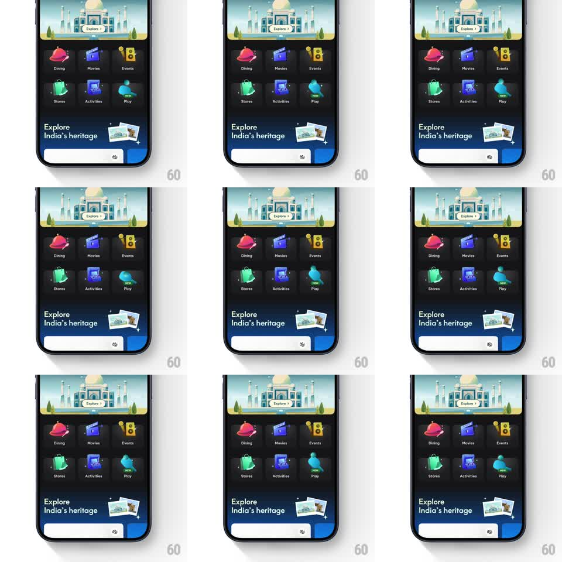

Media
Frame-by-frame

Rebuild this animation 1:1: District's Play grid icon idle loop - a table-tennis paddle inside its tile tilts back and forth, bouncing a tiny ball on its face to pull the eye to the NEW feature.

Rebuild this animation 1:1: District's Play grid icon idle loop - a table-tennis paddle inside its tile tilts back and forth, bouncing a tiny ball on its face to pull the eye to the NEW feature. ## Integration Integration: stack-agnostic spec - springs given as stiffness/damping, timed motions as duration + curve; map every value to your framework and animation library of choice. ## Scene District home grid tile, dark card: the Play tile - a teal paddle shape with a small ball and a "NEW" ribbon tag - sitting among the other static category tiles (Dining, Movies, Events, Stores, Activities). ## Motion spec Pattern: idle attention loop inside a single grid icon. - The loop runs every 4s: the paddle tilts -12deg (200ms, ease-out) as the ball lifts off its face (translateY -14px, arc with slight squash on launch). - The ball peaks, drops back (gravity curve, ~350ms), and lands on the paddle with a 20% squash for 80ms while the paddle dips 4px from the impact. - The paddle rebounds to level with a light spring (~400/18), the ball settles, and both rest for the remainder of the cycle. - The NEW tag wiggles once per cycle (rotate -6deg -> 6deg -> 0, 300ms) right after the ball lands. - All other tiles stay perfectly still - the contrast is what draws attention. ## Calibration - The ball never leaves the tile's bounds - the whole performance happens inside the icon. - Squash-and-stretch is small (20% max) and fast - cartoon physics, not jelly. ## Reduced motion Loop disabled; static tile with the NEW tag. ## Don't miss - The paddle's tilt direction matches the ball's drift so the bounce reads as caused, not random. - The tile's dark card background and label never animate - only the paddle, ball, and tag.